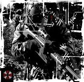

Forums galactiques > Assemblée Galactique : diplomatie officielle > Respect de la déclaration
| Tanis Respect diplomatique : 7 15/06 ETU 04:16 | Score : 7 Détails Un commandant se leva a l'assemblé et prit la parole il était venu de loin avec les derniers vaisseaux qu'il lui restait
Chers commandants et commandantes, aujourd'hui je n'ai plus de planète. J'ai été attaqué par un commandant, je n'ai reçu aucun message, aucun avertissement. Étant un jeune commandant avec peu de moyen, je ne peut me défendre contre de tel commandant. Je ne lui ai pourtant rien fait. Alors la déclaration que l'assemblé a voté me permet d'avoir cinq planètes qui serait a moi et que personne ne devrait pouvoir attaqué. Mais ce système semble cahotique car déjà ma planète a été envahi par une personne. Alors je vien ici pour demander si quelqu'un fera respecter cette déclaration et savoir si je pourrai ravoir mon peuple. Après ce discours il se rassit et attendit | ||
| Sigma Respect diplomatique : 197  15/06 ETU 08:40 | Score : 4 Détails Commandant, la mise en place du gouvernement est imminente. Une fois celui-ci mis en place, il sera en son devoir de vous protéger et de vous aider à récupérer vos 5 planètes, que ce soit par la force ou la diplomatie.
Cependant, peut-être que quelques commandants ici présent a les moyens de vous aider...encore faudrait-il que vous nous fassiez part du nom de votre agresseur. | ||
| Commandeur Valorys Respect diplomatique : 865  15/06 ETU 08:55 | Score : 2 Détails A la suite de Sigma, le commandeur Valorys se leva et pris la parole
En effet il nous faudrait le nom de votre agresseur. Selon la Déclaration des Droits fondamentaux tous commandants à droit à la vie. Si vous avez besoin d'aide n'hesitez pas à nous contacter. Cette déclaration a été faite pour éviter ce genre de situation. Nous ferons tout pour vous aider. Le commandeur se rassit en attendant une réponse de Tanis | ||
| Wat Tambor Respect diplomatique : 204  15/06 ETU 09:03 | Score : 7 Détails Cher Sigma, aucun Gouvernement n'est en place pour le moment. Mais la Déclaration Des Droits Fondamentaux, elle a été adoptée par la majorité du peuple. Donc, en vertu de cela, son application entre en vigueur. C'est plutôt une sorte de charte de conduite, elle explique les comportements à avoir vis-à-vis des autres commandants, elle explicite également les droits de chacun dont la possession de 5 planètes par commandants dans un seul système natal. Ne pas l'apprhédender, c'est ne pas respecter les choix du peuple, ne pas respecter ses décisions.
Donc, celle-ci est considérée comme un pilier des conduites de chacun dans la Galaxie. Il est de notre devoir envers le peuple de la respecter, bîen sûr si vous ne la respectez pas, le Gouvernement ne vous punira pas, étant donné qu'il est en construction, mais d'un autre côté, il ne pourra pas empêcher les commandants qui veulent la faire respecter par quelconque moyen... Sora, Présidente Du Techno-Syndicat. | ||
| Jafnhar Respect diplomatique : 660  15/06 ETU 09:32 | Score : 3 Détails Ces actes sont inadmissibles ... mais le pire c'est que des soit disant défenseurs de la Démocratie font même cela ...
Juste un exemple : Princesse Saurala ... Voici une partie de sa devise : l I.B.S fondation pour secourir les peuples opprimés, réduire le malheur des guerres et reloger les civilisations spoliées. Elle ne supporte pas la souffrance et sa compassion fait sa réputation. Pourtant, un commandant Empereur Kenny est venu vers moi se plaindre que cette commandante sans scrupule a pris 9 planètes dans son système ... Dans ce cas comment se développer correctement alors que toutes les planètes avantageuses ont été attaqué. Commandante Saurala, vous vous dites vous même défenseur des peuple opprimé... Il faudrait déjà combattre le fléau que vous êtes ... Combien de commandants sans défense avez-vous tué ? Combien ? Combien de planètes illégimitime possédez-vous ? J'ai bien tenté de parlementer avec vous ... mais vous avez coupé toutes les communications en ne répondant pas à mes missives ... je vous ai prévenu que je reprendrais les planètes pour ce commandant. Bientôt un Gouvernement sera mis en place et bientôt des actions répressives contre ce genre de commandant(e) sans scrupule, hypocrite, menteur et fourbe seront prises... | ||
| Princesse Saurala Respect diplomatique : 156  15/06 ETU 11:08 | Score : 4 Détails La Princesse sourit a l'écoute du discours de Jafnhar... Elle se leva et demanda la parole...
" Mon Chèr Jafnhar, Enfin vous venez informé la galaxie de mes "horrible et inadmissible" fait d'arme... Cela m'étonnait d'ailleur que vous ne l'eusse encore fait... Enfin, avant de parler et de crier devant la galaxie que je suis une hypocrite assoiffé de pouvoir anéantissant de jeune commandant, tenez vous au courant des dérniéres nouvelle... Mes propositions de transferts de souveraineté au Commandant Empereur Kenny ont déjà été effectué, seulement celui ci ne semble pas être présent ou disponible pour les accepter... Enfin réglons nos différents une bonne foie pour toute!! Et je vais resté poli : Quel est votre probléme a mon égard? Parcque j'ai pointé du doigt le régime Tyrano-Républicain que vous voulez mettre en place sous le nom de Galaxia... Ce formidable projet donnant a un seul et unique Commandant(e) des pouvoirs immense? Alors oui je ne soutiens pas se projet qui a mon gout peut facilement vasiller dans une dicature ou la corruption, cependant, mes remarques avaient pour but de faire évoluer, et de discuter de votre projet... Vous n'avez pas été suffisament intelligent pour ne pas prendre mes remarques dans ce sens, mais contre votre personne, hors il n'en est rien, je me fichtre de vous, et au contraire, j'aimerais entretenir d'exellente relation avec votre personne étant donné que Kahndann et moi même travaillons ensemble... Ensuite le probléme viens aussi du message que je vous ai répondu... "Qu'est ce que je risque a ne pas respectez la Charte?"... Celui ci était simplement informatif, et non arogant comme vous avez pu je l'admet l'interprété... Pour cela, je vous prierais de ne pas diffamé au sein de l'AG, de vous renseignez, et ensuite, pourqoi ne pas réglé nos affairs par MP, j'aurais des propositions a faire au prochain gouvernement... Mes Respects" | ||
| Céthro Respect diplomatique : 220  15/06 ETU 12:36  | Score : 4 Détails Ouaip... Dans mon Village (dans le Village-Capitale, j'entends), on dit:
- "Toi, ta face me r'vient pas! Tu prends toujours les meilleurs morceaux aux méchouis d'la tribu... prochain rognon qu'tu chopes avant les autres, j'assomme! - de quoi?! d'mandes donc à l'autre là si j'suis pas réglo! C'est même moi qu'a inventé l'tour de table pour qu'chacun ait sa part!!!" Ca finit quand même par une grosse baston, mais c'est plus rapide ;]]] J'en profite pour clamer dans cette salle d'augustes et honorables Commandants - merci au passage au maître du protocole que m'a prêté Valorys ;] - le manquement à cette charte du Commandant ROBESPIERRE. Je ionise, je ionise, mais là faudrait carrément prévoir une dérobespierrisation! ;]]] | ||
| Le fou des Ombres Respect diplomatique : 204  15/06 ETU 12:56 | Score : 4 Détails Le fou se lève alors avec un air scandalisé. Il brandit un œuf de poule dans sa main, qu’il agite comme on le ferait avec un drapeau lors d’un combat à mort dans sa taverne.
Hey !! Mais c’est une honte ! Commandant Tanis, nous avons remarqué votre présence sur plusieurs planètes en effet, et nous avons effectivement découvert que les commandants Xemnas et Alexandre vous envahissaient régulièrement. Ce sont ici des paroles alarmantes, des cris de détresse qui préviennent des mouvements de tyrannie que l’on redoute tant dans nos humbles chaumières. Je ne peux qu’aller dans votre sens, mon cher, et vous soutenir ! Il y a trop de fous dans cette galaxie, je n’en reviens pas moi-même. Soudain l’œuf éclate, et une petite boulle jaune au regard apeuré s’en échappe et fait ‘flop’ sur le sol. Le pauvre poussin marche de travers, à force d’être secoué. Serbmo le fou écarquille les yeux pendant que monte sur son visage un état d’euphorie. WHAA !! Il a éclos !!! Aussitôt il disparaît derrière son siège. On entend un vacarme d’outils en tous genre et on le voit ressortir avec une masse. Puis il s’élance au dessus de sa place et pourchasse le poussin. On entend maintenant des « Cuicui, pitipiti !! Bisous, viens ici !! ‘BAOUM’. Zut, raté… ». Après quelques minutes de va et viens dans la salle, le fou fini par l’éclater sauvagement contre un mur. Soulagé, un rictus nerveux disparaît petit à petit, alors qu’il regagne sa place.. Hum, bon. Eh bien Commandant Tanis, je peux peut être vous vendre une planète tranquille dans un coin égaré, contactez moi en privé pour cette affaire. Nous savons à présent qui sont les fauteurs de troubles, et les risques pour les jeunes commandants, je vais tâcher de m’en méfier également. | ||
| Barry Respect diplomatique : 53  15/06 ETU 13:06 | Score : 0 Détails "Bonjour commandant, j'ai appris votre ^rpblème. Ainsi un commandant vous a attaqué? Très bien, étant jeune vous ne pouvez vous défendre exacte? Et ben, je pense qu'il faudrait réglé ce problème n'est-ce pas messieurs?
Réglons le comme d'habitude." | ||
| alexandre Respect diplomatique : 17  15/06 ETU 13:09 | Score : 3 Détails Je trouve le mot régulièrement désaproprié. Nous avons attaqués les planètes de son système et toute celle qui ne nous appartiennent pas on les rends sur la demande des commandants. De plus j'ajoute que j'ai calculé le nombre ne vaisseau qui fallait pour prendre une planète vierge et normalement pas celle d'un commandant. J'aimerai surligné la diplomatie de la coalition du fou des ombres. J' essaye de règler l'histoire dans le calme mais en échange je trouve une coalition qui n'hésite pas à ioniser et je pense que cette histoire n'est qu'un immonde prétexte pour certain de cette coalition pour faire joujou avec l'arme ionique.
J'oubliait, c'est la première fois que je vient dans un système impair avec une flotte pour prendre les planètes VIERGE et ne me mettez pas tout sur le dos en m'appelant fouteur de trouble, c'est assez facile. Ensuite ils auraient du prendre toute les planètes avant d'ouvrir leur système car il y a une message concernant les risques. J'aimerai signalé que le fou des ombres était la en même temps que nous, donc que faisait il la a par sois disant rétablir l'ordre et l'injustice. J'ai une idée la dessus, il allait détruire tanis pour que hanabi est un système entier plus rapidement donc si c'est sa ,il est hyppocrite de dire qu'il veut l'aider en lui donnant une planète | ||
| Le fou des Ombres Respect diplomatique : 204 15/06 ETU 13:15 | Score : 3 Détails Le fou des ombres tourne lentement un regard noir vers le commandant Alexandre. Il le fixe et après une longue inspiration saccadée, il se lâche.
PWAA !! Vous êtes fou !! Vous êtes vraiment dangereux pour cette assemblée !! Tout comme ce poussin là bas !! Il pointe son doigt vers une petite tâche rouge sur un mur. Ce que nous tentons de faire dans ce système est de vous empêcher de vous emparez d’une planète natale de l’une de nos amie !! Vous avez tenté d’envahir sa planète mère, et vous dites que nous nous amusons ?? N’abusez pas de notre patience ! Vous avez envahit les planètes de Tanis, tout comme votre allié, alors qu’il avait des flottes dans son PC. Et vous dites que c’est des troupes uniquement valables pour les planètes vierges ? Mais où va l’assemblée, je vous le demande ! | ||
| Chrys Respect diplomatique : 6  15/06 ETU 13:16 | Score : 4 Détails le commandant Chrys se leva pour demander la parole :
"je souhaiterais réagir sur l'intervention du commandant Jafnhar à propos de la princesse Saurala et du texte de l'IBS FONDATION. Commandant Jafnhar, en tant que Directeur de la Fillial I.B.S sécurity Service, je tiens à vous signaler que nombre de nos experts commerçants ont subi des attaques sur leurs planètes dépôts et plusieurs convois ont eux aussi été attaqué et réduits en cendres. Tous les jours moi même et la Princesse Saurala avons fort à faire pour assurer la sécurité des membres d'IBS CORPORATION et je pense qu'accuser la princesse de personne "hypocrite, menteuse et fourbe" me paraît quelque peu déplacé. Aussi je vous prierais de bien vouloir changer de cible car je trouve particulièrement lâche d'accuser la princesse quand on peut trouver facilement une liste de noms d'autres commandants ayant commis eux de réels actes répréhensibles... mais je ne m'étendrais pas la-dessus, je vous laisse échanger vos politesses toutes plus hypocrites les unes que les autres... cordialement commandant jafnhar" | ||
| Céthro Respect diplomatique : 220 15/06 ETU 13:16 | Score : 2 Détails Chers aminches, permettez-moi de vous faire une proposition :]
Je connais l'alexandre pour avoir subi une invasion massive de sa part... il m'a immédiatement rendu toutes les planetes, c'qui plaide en sa faveur, croyez pas? D'autre part, on n'saurait pas nier qu'une plainte a été déposée... Je peux, si v'z'êtes d'accord, vous offrir ma médiation - j'suis pas impliqué dans la dispute et j'suis du genre arrangeant (et j'ajoute qu'un maître du protocole allège mes messages dans ces cas-là ;] C'est gratuit, sans engagement, et ça m'fait plaisir :] Ca vous convient, honorables commandants? | ||
| alexandre Respect diplomatique : 17 15/06 ETU 13:25 | Score : 2 Détails Pour répondre au fou des ombres j'ai dit NORMALEMENT mais il arrive que certain commandant ne résiste pas mais c'est relativement minime.
| ||
| Le fou des Ombres Respect diplomatique : 204 15/06 ETU 13:32 | Score : 1 Détails Le fou ricane.
Vous voulez dire que "normalement", les planètes mères des gens de cette galaxie résistent, mais que vous tentez malgré tout de les envahir? Hum, nous sommes d'accord sur ce point. Eh bien mon très cher ami, je crois que votre défense est faite. Bon, je vais aller me prendre un bain... En passant du coq à l'âne, il se lève et part de la salle d'un naturel dépassant toute épreuve. Je suivrais la suite de cette conversation via les écrans. | ||
| alexandre Respect diplomatique : 17 15/06 ETU 13:54 | Score : 2 Détails Je n'ai pas dit sa. Quand j'attaque, comme normalement il n'y a pas de risque de prendre des planètes occupé, je ne prend pas la peine de regarder celle qui sont libre et de toute façon je les rends donc il n'y a pas de problème.
| ||
| Xemnas Respect diplomatique : 24  15/06 ETU 14:51 | Score : -1 Détails Je voudrais prendre la parole.
Quand j'ai attaque ce commandant, ses planetes etait V.I.E.R.G.E.S. pas de quoi en faire une affaire d'etat. Si les planetes m'appartenaient encore, je les lui aurait rendu, mais malheureusement, je ne les ai plus, donc ne peux point lui rendre. De plus je voudrais vous faire parvenir ceci : Avis d'invasion. Perte d'une planète Vous avez subi une invasion de la part du commandant « Le fou des Ombres » sur votre planète « Zantetsu » (système 239). La tentative ennemie d'attaquer par surprise a bien réussi. Quand j'ai attaque cette planete elle etait vierge. Mais d'apres son altesse sa seigneurie le fou des ombres : "J'ai attaque la planete de Hanabi..." Oh! My God! Hanabi n'avait qu'une planete et la gardait, sans attaquer les autres, donc cette planete m'est legitime, car je ne lui ai pas volee. Donc recapitulons : J'ai attaquee une planete vierge qui appartenait a Hanabi ET je repete, la planete etait V.I.E.R.G.E. mais appartenait a un autre commandant. J'ai essaye de s'emparere de sa planete mere, que je n'ai meme pas songe un seul instant a attaquer. WAHAAAAAAAAAAAAAAAAAAAAAAA quelle horreur, je viens de m'en rendre compte, meme en etant dirigeant, 1 chasseur B suffit a faire perdre de la flotte a l'adversaire! Comment ca se fait, pourtant avant les tirs ioniques, je n'avais qu'un chasseur B en place. Donc recapitulons, j'ai soit disant attaque son altesse Hanabi qui doit vivre dans la luxure, bien que je ne l'ait pas fait! J'ai attaque sa planete mere en lui faisant perdre 0 flottes! (Quand meme, ca fait beaucoup). bien que cela aussi je ne l'ai pas fait. Autre chose a ajouter? Vous voulez savoir la verite? Ils attaquent les planetes du systeme de Hanabi, pour les lui donner. Mais voila, son altesse Hanabi ne peut pas prendre la peine d'envoyer un minuscule MP pour demander a ce que l'on lui rende son PC natal ou son systeme natal. Alors Mr. le fou des ombres, soit disant traite par diplomatie, mais ne prends meme pas la peine d'envoyer un minuscule MP, de meme pour Hanabi. Et pourtant, je suis ouvert a toutes les demandes... Xemnas | ||
| Tanis Respect diplomatique : 7 15/06 ETU 15:48 | Score : 1 Détails Tanis se leva de son siège et pris la parole à l'assemblé
Je n'avais pas nommé les noms des commandants car je ne les avait pas encore contacté et je ne voulait pas avancer des choses qui aurait pus les mettres dans de facheuses position. Pour votre information ce n'est pas moi qui ai fait l'hyperfusion car j'ai bien tennu compte de l'avertissement. J'ai constaté que Le fou des ombres a reprit ma planète natale. Je ne sais pas votre affaire avec ce commandant Hannabi mais là n'est pas mon problème. Je recherche seulement un coin tranquille pour évoluez tranquillement et ce système ne l'est plus malheureusement. Déjà des gens m'ont contacté pour m'aider a reprendre mes planètes et je vais m'arranger avec eux. Je m'estime content que des gens croit a la diplomatie et veuille la faire respecter. Je vous remerci de votre soutien. Il se rassit et prit contact avec les commandants | ||
| Le fou des Ombres Respect diplomatique : 204 15/06 ETU 15:51 | Score : 0 Détails Le fou ri légèrement, après avoir écouté ces deux alliés tentant de se justifier, il est dans un bain de crânes en train de siroter une infusion étrange. A ses yeux, une chose est claire, ils tentent de l’entraîner dans des erreurs complètement démesurées à ce qui se passait dans ces lieux. Il décide de passer une serviette et allume l’enregistreur d’un claquement de doigt.
Tiens, vous vous réveillez.(Edit : destiné à Xemnas) Voulez vous que je vous expose les faits vu de chez moi ? Ils sont si simples, il y a des crânes partout, les épices et les femmes sont agréables, je vais peut être augmenter un peu la température du bain. Evidemment je vous ai repris ces planètes. Vous vous en êtes emparé si sauvagement que le peuple les habitant ont du être pris d’une peur immense. Mais dites moi, pourquoi ne mentionnez vous pas que vous avez envahit ce commandant Tanis, sans lui rendre ses planètes dans un espace de 48 heures (puisque après vous n’y étiez plus) ? Je ne soutiendrais jamais vos propos diffamatoires qui n’ont pour but que de tenter de me dénigrer aux yeux de l’assemblée !! Vous parlez de tirs ioniques ? Je n’en suis nullement responsable. Je n’ai jamais vu d’aussi fous personnages que vous et votre allié pour sauter sur de pareils systèmes non protégés, quel manque d’humanité !! A ces mots il a un léger rire. Oh que si j’ai répondu à votre message !! Voulez vous vous rappeler de ce qu’il en était ? Vous m’avez demandé immédiatement après l’invasion de me rendre Votre planète, celle que vous veniez de prendre à un autre commandant souvenez vous. Je vous ai gentiment répondu que je ne participerais pas à Votre plan d’invasion. Les communications n’ont certes pas été plus loin, qui le voudrait avec un fou comme vous ! Je resterais indigné par ces accusations ! Je ne m’attarderais plus sur ce sujet, continuez vos mensonges mais laissez nous hors de cela, je ne crains pas les mollusques galactiques. Les pluies acides, par contre j’aime ça ! C’est vraiment agréable de sentir sa peau fondre. Alors je vous en prie, j’ai le dos tourné (pas le derrière levé ^^), crachez vos calomnies acides, je les ignorerais désormais. Il reste perché dans ses pensées, celles d’un paradis à la pluie acide, et sans poussins. Oh !! j'allais oublier. Mon cher Tanis, je ne savais quelles étaient les votres, je n'avais pas pris de notes. Permettez moi de vous les restituer. | ||
| Wat Tambor Respect diplomatique : 204 15/06 ETU 15:52 | Score : 6 Détails Commandant Xemnas, depuis que vous avez participé aux multiples invasions de la Capitale (Indirectement), nous vous retrouvons à chaque fois dans de louches affaires.
Pour commencer, vous n'avez rien à faire dans un système impair, et encore moins y prendre des planètes vierges, qui je rappelle selon la Constitution Des Droits Fondamentaux, appartiennent aux commandants natifs de ce système. Pourquoi n'avez-vous plus les planètes ? Avez-vous été attaqué ou les avez-vous passé à des amis pour qu'ils vous les gardent au chaud ? L'attaque de Le fou des Ombres est légitime, contrairement à ce que vous semblez croire. Il reprend les planètes que vous avez pris à Hanabi, et les lui restitue. Vous n'avez pas à attaquer des planètes dans les systèmes impairs, vous n'avez donc aucune légitimité à en posseder une ou plusieurs. Vous avez attaqué une planète qui appartenait à Hanabi, qui était vierge et qui appartenait à un autre commandant ? Si vous pouviez expliquer correctement cette phrase, car je ne comprends pas son vrai sens, bien qu'il y ai plusieurs traductions possibles. Vous avez essayé de vous emparer de sa planète mère, et vous dites ne pas y avoir pensé ou songer ? Vous êtes très étrange mon cher, chaque être vivant pense et réfléchie, à moins que vous ne soyez un rare spécimen... Même si vous lui avez fait perdre 0 vaisseaux ou plusieurs, là n'est pas la question, vous n'avez tout simplement pas la légitimité d'attaquer des commandants "en voie de développement" dans leur système respectif. Pour la diplomatie, je ne pense pas que le problème vienne des Seigneurs, mais d'autre part... Sora, Présidente Du Techno-Syndicat. |
Forums galactiques > Assemblée Galactique : diplomatie officielle > Respect de la déclaration